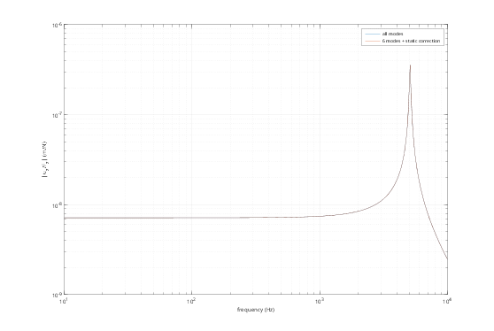

%DEMOASSEMBLY Three-part STL assembly: modes and a state-space model. % An elastic base plate and pillar, meshed separately (non-conforming) and % tied together, carry a rigid top plate (payload). The base is clamped at % its bottom face. Requires Gmsh (set GMSH if needed). addpath(fileparts(fileparts(mfilename('fullpath')))); out = fullfile(tempdir, 'fmbdDemo'); if ~isfolder(out), mkdir(out); end % geometry in mm, written as STL files (stand-in for a CAD export) fmbd.boxSTL(fullfile(out, 'base.stl'), [-40 -40 0], [40 40 10]); fmbd.cylinderSTL(fullfile(out, 'pillar.stl'), [0 0], 8, 10, 110); fmbd.boxSTL(fullfile(out, 'top.stl'), [-25 -25 110], [25 25 116]); % bodies: mesh with Gmsh, mm -> m, assign materials steel = fmbd.material(210e9, 0.30, 7850); alu = fmbd.material(70e9, 0.33, 2700); base = fmbd.Body.elastic(fullfile(out, 'base.stl'), steel, Size = 8, Scale = 1e-3, Modes = 10); pillar = fmbd.Body.elastic(fullfile(out, 'pillar.stl'), alu, Size = 3, Scale = 1e-3, Modes = 10); top = fmbd.Body.rigid(fullfile(out, 'top.stl'), 7850, Scale = 1e-3); % system: connections and supports s = fmbd.System(); s.add(base); s.add(pillar); s.add(top); s.tie('base', 'pillar'); % bonded (finer mesh as slave): one elastic group s.tie('top', 'pillar'); % the pillar's top face is fixed to the rigid plate s.fix('base', @(X) X(:,3) < 1e-6); % clamp the bottom face % natural frequencies and modes tic; [f, V] = s.modes([], 6); fprintf('%d mesh dofs, %d model dofs, built in %.1f s\n', base.nDof + pillar.nDof, s.nDof, toc); figure('Color', 'w'); for k = 1:4 subplot(1, 4, k); s.plotMode([], V(:,k), Amplitude = 0.02); title(sprintf('Mode %d: %.0f Hz', k, f(k))); axis off end % state space: a vertical force on the plate in, its displacement and % acceleration out. A small model (Modes = 6) keeps the exact static gain. s.input('Fz', 'top', [], 3); s.output('uz', 'top', [], 3); s.output('az', 'top', [], 3, Type = 'acceleration'); full = s.statespace(Damping = 0.01); small = s.statespace(Modes = 6, Damping = 0.01); dc = @(S) -S.C(1,:)*(S.A\S.B); fprintf('static compliance: %.4e m/N (%d states), %.4e m/N (%d states)\n', ... dc(full), size(full.A, 1), dc(small), size(small.A, 1)); fHz = logspace(1, 4, 400); H = zeros(2, numel(fHz)); for k = 1:numel(fHz) for m = 1:2 S = {full, small}; S = S{m}; H(m,k) = S.C(1,:)*((2i*pi*fHz(k)*eye(size(S.A)) - S.A)\S.B); end end figure('Color', 'w'); loglog(fHz, abs(H)); grid on xlabel('frequency (Hz)'); ylabel('|u_z/F_z| (m/N)'); legend('all modes', '6 modes + static correction');
27294 mesh dofs, 38 model dofs, built in 3.0 s static compliance: 7.1567e-09 m/N (52 states), 7.1567e-09 m/N (14 states)

